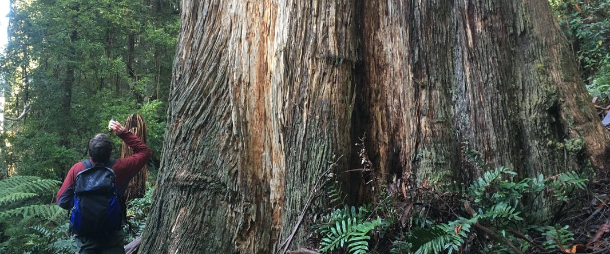

Site information
This site displays information and pictures to do with some of the worlds largest trees. Found right here on the doorstep of Melbourne in the Yarra Ranges as well as the Otways, East Gippsland and the Macedon Ranges. Currently there is several maps and visualisations as well as general information presented on the site.
tree portal viewerThis site aims to be a resource in noting the locations, health and factors influencing these trees. In the future it aims to include: entry forms for big trees found, a mapping page including overlays of fire, logging and other influences to big tree populations.

| Name | Species | Height |
|---|---|---|
| Slinky Sloane | E. Regnans | 93m |
| Atremis | E. Regnans | 92.1m |
| Coranderrk Creek Colossus | E. Regnans | 91m |
Some relevant links:
Victoria's Giant Trees by Brett MifsudThe Tree Projects
The Australian National Register of Big Trees
RMIT School of Science homepage